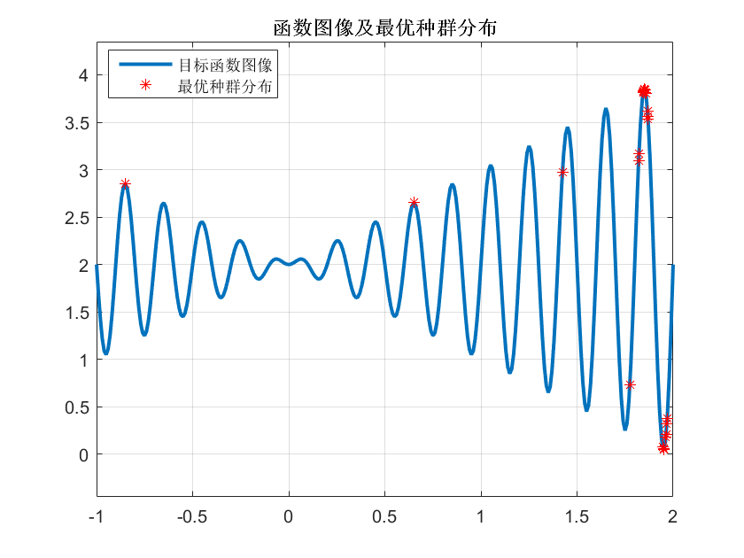
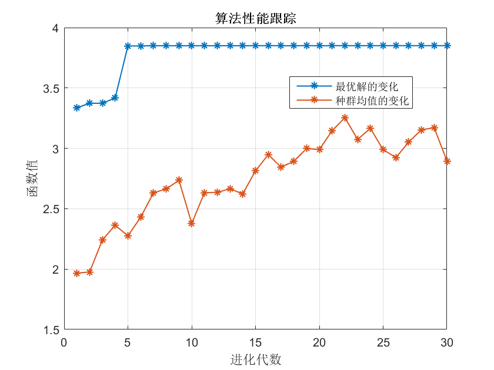

简单一元函数优化实例
求解此函数最大值：f(x)=xsin(10pi*x+2),x:[-1.2]
Contents
目标函数
fx=@(x)x.*sin(10*pi*x)+2;
算法参数
population=40; %种群个体数 generation=30; %最大遗传代数 len=20; %染色体长度（二进制位数） gap=0.9; %代沟 Pc=0.7; %交叉概率 Pm=NaN; %变异概率缺省 trace=zeros(2,generation); %寻优结果跟踪 FieldD=[20;-1;2;1;0;1;1]; %区域描述器（函数bs2rv的参数） gen=0; %代数计数器
初始种群
Chrom=crtbp(population,len); %创建种群 val=bs2rv(Chrom,FieldD); %转换成十进制 ObjV=fx(val); %初始种群对应的目标函数值
种群迭代进化，搜索最优解
while gen<generation FitnV=ranking(-ObjV); %适应度 NewChrom=select('sus',Chrom,FitnV,gap); %选择算子 NewChrom=recombin('xovsp',NewChrom,Pc); %单点交叉算子 NewChrom=mutate('mut',NewChrom,[],Pm); %变异算子 val=bs2rv(NewChrom,FieldD); ObjVNew=fx(val); [Chrom,ObjV]=reins(Chrom,NewChrom,1,[1,1],ObjV,ObjVNew); %重插入子代种群 val=bs2rv(Chrom,FieldD); gen=gen+1; %算法性能跟踪 trace(1,gen)=max(ObjV); trace(2,gen)=sum(ObjV)/length(ObjV); end
结果
%最优种群的分布 x=-1:0.01:2; y=fx(x); figure(1) plot(x,y,'LineWidth',2); grid on axis([-1 2 min(y)-0.5 max(y)+0.5]); hold on; plot(val,ObjV,'r*'); hold off legend('目标函数图像','最优种群分布','Location','Best'); title('函数图像及最优种群分布') %最优解 [Y,I]=max(ObjV); disp(['max=' num2str(Y)]); disp(['xVal=' num2str(val(I))]); %算法性能跟踪 figure(2) plot(trace(1,:),'-*','LineWidth',1); hold on plot(trace(2,:)','-*','LineWidth',1); hold off legend('最优解的变化','种群均值的变化','Location','Best'); grid on xlabel('进化代数'); ylabel('函数值'); title('算法性能跟踪')
max=3.8503 xVal=1.8505 